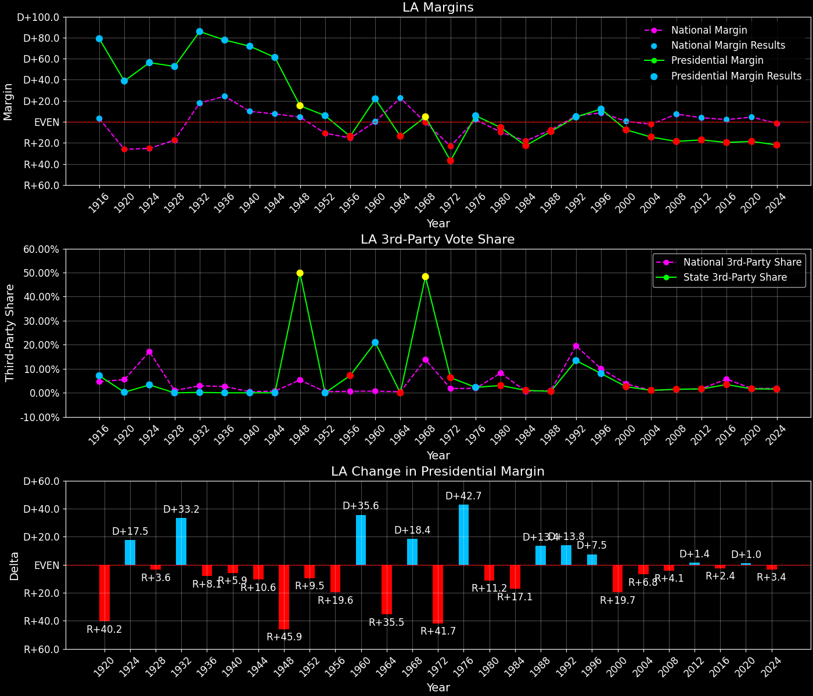

Louisiana (LA) — Statewide

Margins · 3rd-Party share · Pres. deltas

Relative margins · Relative 3rd-Party · Rel. deltas
Louisiana (LA) — Total Data
| Year | D | R | State Margin | Nat. Margin | Rel. Margin | Total votes | EVs |
|---|---|---|---|---|---|---|---|
| 1964 | 387,068(43.2%) | 509,225(56.8%) | R+13.6 | D+22.6 | R+36.2 | 896,293 | 10 |
| 1968 | 309,615(28.2%)(Δ -77,453) | 257,535(23.5%)(Δ -251,690) | D+4.7(Δ D+18.4) | R+0.7(Δ R+23.3) | D+5.4(Δ D+41.7) | 1,097,450(Δ 201,157) | 10 |
| 1972 | 298,142(28.4%)(Δ -11,473) | 686,852(65.3%)(Δ 429,317) | R+37.0(Δ R+41.7) | R+23.1(Δ R+22.4) | R+13.8(Δ R+19.3) | 1,051,491(Δ -45,959) | 10 |
| 1976 | 661,365(51.7%)(Δ 363,223) | 587,446(46.0%)(Δ -99,406) | D+5.8(Δ D+42.7) | D+2.1(Δ D+25.2) | D+3.7(Δ D+17.5) | 1,278,439(Δ 226,948) | 10 |
| 1980 | 708,453(45.7%)(Δ 47,088) | 792,853(51.2%)(Δ 205,407) | R+5.5(Δ R+11.2) | R+9.7(Δ R+11.8) | D+4.3(Δ D+0.6) | 1,548,591(Δ 270,152) | 10 |
| 1984 | 651,586(38.2%)(Δ -56,867) | 1,037,299(60.8%)(Δ 244,446) | R+22.6(Δ R+17.1) | R+18.2(Δ R+8.5) | R+4.4(Δ R+8.7) | 1,706,822(Δ 158,231) | 10 |
| 1988 | 734,281(45.1%)(Δ 82,695) | 883,702(54.3%)(Δ -153,597) | R+9.2(Δ D+13.4) | R+7.7(Δ D+10.5) | R+1.5(Δ D+2.9) | 1,628,202(Δ -78,620) | 10 |
| 1992 | 815,971(45.6%)(Δ 81,690) | 733,386(41.0%)(Δ -150,316) | D+4.6(Δ D+13.8) | D+5.6(Δ D+13.3) | R+0.9(Δ D+0.5) | 1,790,017(Δ 161,815) | 9 |
| 1996 | 927,837(52.0%)(Δ 111,866) | 712,586(39.9%)(Δ -20,800) | D+12.1(Δ D+7.5) | D+8.5(Δ D+3.0) | D+3.5(Δ D+4.5) | 1,783,959(Δ -6,058) | 9 |
| 2000 | 792,344(44.9%)(Δ -135,493) | 927,871(52.6%)(Δ 215,285) | R+7.7(Δ R+19.7) | D+0.5(Δ R+8.0) | R+8.2(Δ R+11.7) | 1,765,656(Δ -18,303) | 9 |
| 2004 | 820,299(42.2%)(Δ 27,955) | 1,102,169(56.7%)(Δ 174,298) | R+14.5(Δ R+6.8) | R+2.5(Δ R+3.0) | R+12.0(Δ R+3.9) | 1,943,106(Δ 177,450) | 9 |
| 2008 | 782,989(39.9%)(Δ -37,310) | 1,148,275(58.6%)(Δ 46,106) | R+18.6(Δ R+4.1) | D+7.3(Δ D+9.7) | R+25.9(Δ R+13.9) | 1,960,761(Δ 17,655) | 9 |
| 2012 | 809,141(40.6%)(Δ 26,152) | 1,152,262(57.8%)(Δ 3,987) | R+17.2(Δ D+1.4) | D+3.9(Δ R+3.4) | R+21.1(Δ D+4.8) | 1,994,065(Δ 33,304) | 8 |
| 2016 | 780,154(38.4%)(Δ -28,987) | 1,178,638(58.1%)(Δ 26,376) | R+19.6(Δ R+2.4) | D+2.1(Δ R+1.8) | R+21.7(Δ R+0.7) | 2,029,032(Δ 34,967) | 8 |
| 2020 | 856,034(39.9%)(Δ 75,880) | 1,255,776(58.5%)(Δ 77,138) | R+18.6(Δ D+1.0) | D+4.5(Δ D+2.4) | R+23.1(Δ R+1.3) | 2,148,062(Δ 119,030) | 8 |
| 2024 | 766,870(38.2%)(Δ -89,164) | 1,208,505(60.2%)(Δ -47,271) | R+22.0(Δ R+3.4) | R+1.5(Δ R+5.9) | R+20.5(Δ D+2.5) | 2,006,975(Δ -141,087) | 8 |
Column explanations
- Δ
- Change (delta) in the value from the previous election year.
- Year
- Election year.
- D
- Number of votes for the Democratic candidate (raw count(pct%)).
- R
- Number of votes for the Republican candidate (raw count(pct%)).
- State Margin
- Margin between the two major-party candidates, including third-party votes ((D - R)/total).
- Nat. Margin
- The national presidential margin for that year, including third-party votes ((D_total - R_total)/total_votes).
- Rel. Margin
- The presidential margin relative to the national presidential margin (Margin - Nat. Margin).
- Total votes
- Total voter turnout or ballots cast (when provided).
- EVs
- Number of electoral votes allocated to this state or unit.
Louisiana (LA) — Third-Party Data
| Year | D | R | Other votes | State 3rd-Party Share | 3rd-Party Nat. Share | 3rd-Party Rel. Share |
|---|---|---|---|---|---|---|
| 1964 | 387,068(43.2%) | 509,225(56.8%) | 0(0.0%) | 0.00% | 0.48% | -0.48% |
| 1968 | 309,615(28.2%)(Δ -77,453) | 257,535(23.5%)(Δ -251,690) | 530,300(48.3%) | 48.32% | 13.86% | 34.46% |
| 1972 | 298,142(28.4%)(Δ -11,473) | 686,852(65.3%)(Δ 429,317) | 66,497(6.3%) | 6.32% | 1.80% | 4.52% |
| 1976 | 661,365(51.7%)(Δ 363,223) | 587,446(46.0%)(Δ -99,406) | 29,628(2.3%) | 2.32% | 1.90% | 0.42% |
| 1980 | 708,453(45.7%)(Δ 47,088) | 792,853(51.2%)(Δ 205,407) | 47,285(3.1%) | 3.05% | 8.24% | -5.18% |
| 1984 | 651,586(38.2%)(Δ -56,867) | 1,037,299(60.8%)(Δ 244,446) | 17,937(1.1%) | 1.05% | 0.67% | 0.38% |
| 1988 | 734,281(45.1%)(Δ 82,695) | 883,702(54.3%)(Δ -153,597) | 10,219(0.6%) | 0.63% | 0.98% | -0.35% |
| 1992 | 815,971(45.6%)(Δ 81,690) | 733,386(41.0%)(Δ -150,316) | 240,660(13.4%) | 13.44% | 19.55% | -6.10% |
| 1996 | 927,837(52.0%)(Δ 111,866) | 712,586(39.9%)(Δ -20,800) | 143,536(8.0%) | 8.05% | 10.05% | -2.00% |
| 2000 | 792,344(44.9%)(Δ -135,493) | 927,871(52.6%)(Δ 215,285) | 45,441(2.6%) | 2.57% | 3.75% | -1.17% |
| 2004 | 820,299(42.2%)(Δ 27,955) | 1,102,169(56.7%)(Δ 174,298) | 20,638(1.1%) | 1.06% | 1.00% | 0.06% |
| 2008 | 782,989(39.9%)(Δ -37,310) | 1,148,275(58.6%)(Δ 46,106) | 29,497(1.5%) | 1.50% | 1.42% | 0.08% |
| 2012 | 809,141(40.6%)(Δ 26,152) | 1,152,262(57.8%)(Δ 3,987) | 32,662(1.6%) | 1.64% | 1.73% | -0.09% |
| 2016 | 780,154(38.4%)(Δ -28,987) | 1,178,638(58.1%)(Δ 26,376) | 70,240(3.5%) | 3.46% | 5.73% | -2.27% |
| 2020 | 856,034(39.9%)(Δ 75,880) | 1,255,776(58.5%)(Δ 77,138) | 36,252(1.7%) | 1.69% | 1.84% | -0.16% |
| 2024 | 766,870(38.2%)(Δ -89,164) | 1,208,505(60.2%)(Δ -47,271) | 31,600(1.6%) | 1.57% | 1.88% | -0.31% |
Column explanations
- Year
- Election year.
- D
- Number of votes for the Democratic candidate (raw count(pct%)).
- R
- Number of votes for the Republican candidate (raw count(pct%)).
- Other votes
- Number of votes for third-party (other) candidates (raw count(pct%)).
- State 3rd-Party Share
- Share of the vote received by third-party (other) candidates.
- 3rd-Party Nat. Share
- The national third-party share for that year (3rd-Party votes / total votes).
- 3rd-Party Rel. Share
- Third-party share relative to the national third-party share (3rd-Party share - Nat. 3rd-Party share).

Two-party margins · relative · deltas
Louisiana (LA) — Two-Party Data
| Year | D | R | 2-Party Margin | 2-Party Nat. Margin | 2-Party Rel. Margin | EVs |
|---|---|---|---|---|---|---|
| 1964 | 387,068(43.2%) | 509,225(56.8%) | R+13.6 | D+22.7 | R+36.3 | 10 |
| 1968 | 309,615(54.6%)(Δ -77,453) | 257,535(45.4%)(Δ -251,690) | D+9.2(Δ D+22.8) | R+0.8(Δ R+23.5) | D+10.0(Δ D+46.3) | 10 |
| 1972 | 298,142(30.3%)(Δ -11,473) | 686,852(69.7%)(Δ 429,317) | R+39.5(Δ R+48.6) | R+23.6(Δ R+22.8) | R+15.9(Δ R+25.9) | 10 |
| 1976 | 661,365(53.0%)(Δ 363,223) | 587,446(47.0%)(Δ -99,406) | D+5.9(Δ D+45.4) | D+2.1(Δ D+25.7) | D+3.8(Δ D+19.7) | 10 |
| 1980 | 708,453(47.2%)(Δ 47,088) | 792,853(52.8%)(Δ 205,407) | R+5.6(Δ R+11.5) | R+10.6(Δ R+12.7) | D+5.0(Δ D+1.2) | 10 |
| 1984 | 651,586(38.6%)(Δ -56,867) | 1,037,299(61.4%)(Δ 244,446) | R+22.8(Δ R+17.2) | R+18.3(Δ R+7.7) | R+4.5(Δ R+9.5) | 10 |
| 1988 | 734,281(45.4%)(Δ 82,695) | 883,702(54.6%)(Δ -153,597) | R+9.2(Δ D+13.6) | R+7.8(Δ D+10.5) | R+1.4(Δ D+3.1) | 10 |
| 1992 | 815,971(52.7%)(Δ 81,690) | 733,386(47.3%)(Δ -150,316) | D+5.3(Δ D+14.6) | D+6.9(Δ D+14.7) | R+1.6(Δ R+0.1) | 9 |
| 1996 | 927,837(56.6%)(Δ 111,866) | 712,586(43.4%)(Δ -20,800) | D+13.1(Δ D+7.8) | D+9.5(Δ D+2.6) | D+3.6(Δ D+5.2) | 9 |
| 2000 | 792,344(46.1%)(Δ -135,493) | 927,871(53.9%)(Δ 215,285) | R+7.9(Δ R+21.0) | D+0.5(Δ R+8.9) | R+8.4(Δ R+12.1) | 9 |
| 2004 | 820,299(42.7%)(Δ 27,955) | 1,102,169(57.3%)(Δ 174,298) | R+14.7(Δ R+6.8) | R+2.5(Δ R+3.0) | R+12.2(Δ R+3.8) | 9 |
| 2008 | 782,989(40.5%)(Δ -37,310) | 1,148,275(59.5%)(Δ 46,106) | R+18.9(Δ R+4.3) | D+7.4(Δ D+9.9) | R+26.3(Δ R+14.1) | 9 |
| 2012 | 809,141(41.3%)(Δ 26,152) | 1,152,262(58.7%)(Δ 3,987) | R+17.5(Δ D+1.4) | D+3.9(Δ R+3.4) | R+21.4(Δ D+4.9) | 8 |
| 2016 | 780,154(39.8%)(Δ -28,987) | 1,178,638(60.2%)(Δ 26,376) | R+20.3(Δ R+2.8) | D+2.2(Δ R+1.7) | R+22.6(Δ R+1.1) | 8 |
| 2020 | 856,034(40.5%)(Δ 75,880) | 1,255,776(59.5%)(Δ 77,138) | R+18.9(Δ D+1.4) | D+4.5(Δ D+2.3) | R+23.5(Δ R+0.9) | 8 |
| 2024 | 766,870(38.8%)(Δ -89,164) | 1,208,505(61.2%)(Δ -47,271) | R+22.4(Δ R+3.4) | R+1.5(Δ R+6.0) | R+20.9(Δ D+2.6) | 8 |
Column explanations
- Δ
- Change (delta) in the value from the previous election year.
- Year
- Election year.
- D
- Number of votes for the Democratic candidate (raw count(pct%)).
- R
- Number of votes for the Republican candidate (raw count(pct%)).
- 2-Party Margin
- Margin between the two major-party candidates, ignoring third-party votes ((D - R)/(D + R)).
- 2-Party Nat. Margin
- The national presidential margin for that year, including third-party votes ((D_total - R_total)/total_votes).
- 2-Party Rel. Margin
- The presidential margin relative to the national presidential margin (Margin - Nat. Margin).
- EVs
- Number of electoral votes allocated to this state or unit.